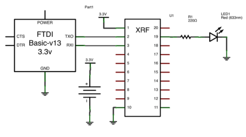
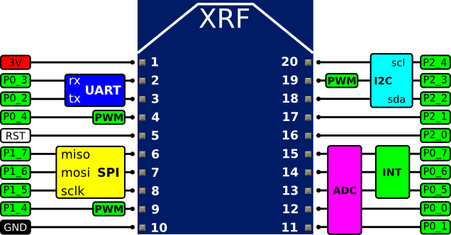

SenseMote-XRF
SenseMote-XRF is an alternative firmware for the Ciseco XRF CC1110 module, customisable by you. Use the Arduino-like sketch language to build wireless sensors and actuators, then connect them to the internet with the SenseHub.
Getting One
Currently, SenseMote is a DIY project. You will need to obtain an XRF CC1110 module from Ciseco (or equivalent) and reflash it with the CCTL bootloader. For this we recommend using either the CC-Debugger or a GoodFET. We hope to start offering pre-flashed modules in future.
Once your module has been flashed with the bootloader and your serial cable is attached, you're ready to go. Download the SenseMote firmware and begin coding.
Making an app
All apps are kept in the apps/ directory of the firmware tree. Before building your first app, the SenseMote firmware needs to know where your serial port is. Edit config.mk and change CCTL_DEVICE appropriately. Connect power and serial to your XRF, then attach an LED via a current limiting resistor to pin 19 as shown below.

From the top of the firmware tree type make APP=ledsketch install. You should see the LED fading.
To create a new app, simply copy apps/ledsketch and change the directory and file names. See below for details of the sketch API.
Pinout
SenseMote-XRF provides a UART, high speed SPI, I2C, Analogue-to-digital-converter (ADC), hardware PWM and general purpose IO pins. 
This diagram shows all of the pins and their uses. Sketches refer to the XRF pin numbers (in white). The CC1110 datasheet refers to the pins by their outer names (P0_1, P2_1, etc).
2.0V-3.6V must be supplied between pins 1 and 10.
The reset (RST) pin may safely be left unconnected. Briefly shorting RST to GND will reset the board.
Language
The sketch language is an Arduino-like shorthand C. All standard C operators and types are available as is much of the standard library.
Basics
setup()
Every sketch must contain one setup() function. The function will be called once on startup.
loop()
Every sketch must contain one loop() function. The function will be called repeatedly.
Callbacks
All callback functions are of type void callback(void).
Variables
__xdata
The processor used, the 8051, only has a very small amount of internal RAM. Automatic variables declared on the stack (ie. declared inside your functions) use this RAM. However, the CC1110 has several kilobytes of XRAM. The XRAM is external to the 8051 core, but still on-chip. Any large variables declared in sketches should be placed in XRAM.
To place a variable in XRAM, it must be either static or global in scope and declared using the __xdata attribute.
__xdata int my_var = 7;
void setup()
{
...
}
Declaring a static variable within a function (scoped to function, but persistent)
void loop()
{
static __xdata int my_var = 7;
...
}
Constants
HIGH, LOW
Digital pins can either be HIGH (3V) or LOW (GND). Calls to digitalWrite() accept HIGH or LOW while digitalRead() returns HIGH or LOW.
INPUT, OUTPUT
Digital pins can be configured as OUTPUT where they can be driven HIGH or LOW using digitalWrite(). Or pins may be configured as INPUT where they can be read using digitalRead().
FALLING, RISING
Digital INPUT pins with attached interrupts may be configured to interrupt on a FALLING or RISING edge.
Digital IO
All pins except GND, 3V and RST are available as both digital inputs and outputs.
pinMode(pin, mode)
Configures the pin to be either INPUT or OUTPUT.
digitalRead(pin)
Reads the current state of a pin configured as INPUT, either HIGH or LOW.
digitalWrite(pin, value)
Sets the state of a pin configured as OUTPUT to value, either HIGH or LOW.
Analogue IO
Pins 11, 12, 13, 14 and 15 can be used as analogue inputs.
Pins 4, 9 and 19 can be used as PWM outputs.
analogRead(pin)
Samples the voltage at pin, returns a 12 bit unsigned value.
analogWrite(pin, value)
Produce a square wave on pin of specified 8-bit duty cycle.
I2C
Pins 20 and 18 may optionally be used to provide an I2C master.
External pullup resistors are needed.
i2cInit()
i2cInit() must be called before any other i2c functions to configure the pins.
i2cRead8(deviceAddress, registerAddress)
Reads and returns 8 bits of data from registerAddress on deviceAddress.
i2cRead16(deviceAddress, registerAddress)
Reads and returns 16 bits of data from registerAddress on deviceAddress.
i2cWrite8(deviceAddress, registerAddress, data)
Writes 8 bits of data to registerAddress on deviceAddress.
SPI
Pins 6, 7 and 8 may optionally be used to provide a SPI master.
spiInit()
spiInit() must be called before any other spi functions to configure the pins.
spiTransfer(dataByte)
Send dataByte and return received data.
Serial/UART
Pins 2 and 3 may optionally be used to provide a serial port at 115200bps 8N1.
serialInit()
serialInit() should be called before any other serial functions to configure the pins.
serialWriteString(str)
Writes str to the serial port.
serialWriteChar(c)
Writes c to the serial port as a raw byte.
serialWriteDec(d)
Writes d to the serial port as a signed 32 bit value in decimal.
serialReadChar()
Reads from the serial port. If a character is available in the buffer, returns it, else returns -1.
Time
delay(ms)
Pauses execution by spinning in a loop for ms milliseconds. Interrupts will still be serviced.
sleepQs(qs)
Pauses execution by sleeping in a low power mode for qs quarter seconds. Only external pin interrupts (ie. pins 13, 14, 15) will wake the board early.
attach1Hz(timercb)
Attaches a timercb callback function to be called once each second.
detach1Hz()
Detaches any callback function registered to be called once each second.
Interrupts
Pins 13, 14 and 15, when configured as INPUT may optionally generate interrupts. Interrupts can be raised on either falling or rising edge, but all three pins must share the same mode.
attachInterrupt(pin, callback, mode)
Attach callback function to pin according to mode, either RISING or FALLING. The callback function must take no arguments and return no value. The callback function will be called in interrupt context, so it is important not to perform any slow tasks in the callback.
detachInterrupt(pin)
Detach any registered callback from pin.
Pachube
Pachube access is provided via the radio link to a hub. Delivery of messages and reception of responses are not guaranteed. But, if desired, a reliable transport using retries and acknowledgements can be implemented by a sketch. All Pachube access is manipulating string key/value data within a single Pachube feed.
pachubePut(key, val, completecb)
Sends a request to put val into key. Both val and key must be strings. At a later time, if this request is successfully acknowledged by Pachube then completecb will be called. If a previous message is acknowledged after calling pachubePut() again, the response will be returned in the new completecb. If completecb is 0 then no callback will be made.
pachubeGet(key, listencb)
Sends a request to get string key. At a later time, if a response comes back then listencb will be called. If a previous message is responded to after calling pachubeGet() again, the response will be returned in the new listencb. If listencb is 0 then no callback will be made.
pachubePoll()
Sends a request to the hub to request any pending responses from Pachube. If a response is received then listencb (passed into pachubeGet()) or completecb (passed into pachubePut()) will be called. Both pachubeGet() and pachubePut() also poll the hub, so pachubePoll() should only be called when a response is expected but there is nothing new to send.
pachubeSeq()
Returns sequence number of last received message
pachubeKey()
Returns a string containing the last key received. Use this from within the listencb passed to pachubeGet().
pachubeValue()
Returns a string containing the last value received. Use this from within the listencb passed to pachubeGet().
Example Sketches
The following examples assume the circuit below, using a 3V serial adapter, LED and a push button.
Blinking LED
Blink an LED with a 1s period.
int state = HIGH;
void setup()
{
pinMode(19, OUTPUT);
}
void loop()
{
digitalWrite(19, state);
state = !state;
delay(1000);
}
Fading LED
Fade the brightness of an LED up and down using PWM.
int val = 0;
int dir = 1;
void setup()
{
pinMode(19, OUTPUT);
}
void loop()
{
analogWrite(19, val);
delay(10);
val += dir;
if (val == 0 || val == 255)
dir = -dir;
}
Switched LED
Read a push button and use it to control an LED.
void setup()
{
pinMode(19, OUTPUT);
pinMode(11, INPUT);
}
void loop()
{
digitalWrite(19, digitalRead(11));
}
Pachube Put
Send a message to Pachube to set mykey to an incremeting integer. Low power sleep for 2s, repeat.
int myval = 0;
void setup()
{
}
void loop()
{
char str[32];
itoa(myval++, str);
pachubePut("mykey", str, 0);
sleepQs(8);
}
Pachube Get
Poll Pachube every 2s for value of led, then set physical LED to this value.
void setup()
{
pinMode(19, OUTPUT);
}
void response()
{
analogWrite(19, pachubeValue());
}
void loop()
{
pachubeGet("led", response);
sleepQs(8);
}